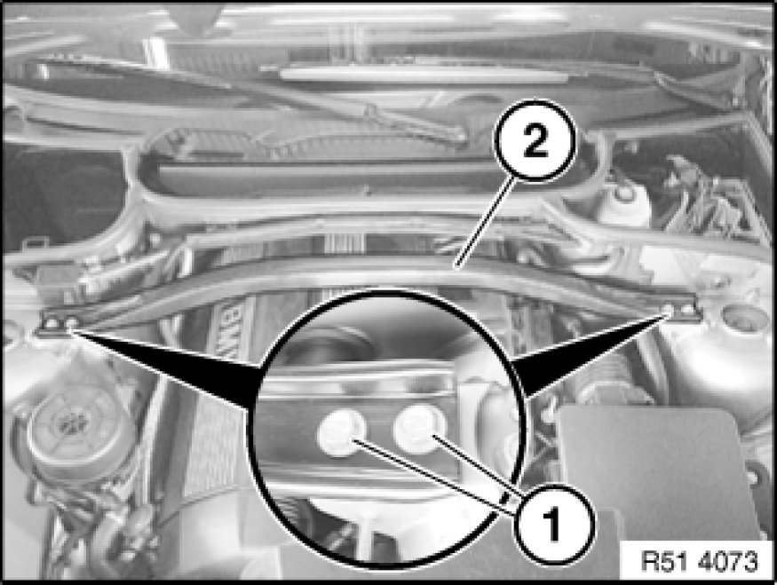

Strut Tower Brace: Service and Repair
51 71 373 - Removing and installing/replacing tension strut on spring strut dome

Important!
Vehicles must not be driven without tension struts.
Driving without tension struts may damage the vehicle body.

Release screws (1) and remove tension strut (2).
Tightening torque 51 71 4AZ Specifications.